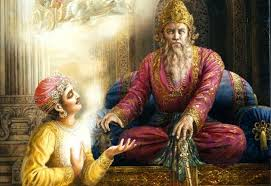

DHRITRASHTRA
Birth of Dhritrashtra

With Vichitravirya having died of sickness, Bheeshma unable to take the throne because of his pratigya, and Bahlika's line unwilling to leave Bahlika Kingdom, there was a succession crisis in Hastinapur. Satyavati invites her son Vyasa to impregnate the queens Ambika and Ambalika under the Niyoga practice. When Vyasa went to impregnate Ambika, his scary appearance frightened her, so she closed her eyes during their union; hence, her son was born blind.
Dhritarashtra, along with his younger half-brother Pandu is trained in the military arts by Bheeshma and Kripacharya. Hindered by his handicap, Dhritarashtra is unable to wield weapons, but has the strength of one hundred thousand elephants due to boon given by Vyasa, and is said to be so strong that he can crush iron with his bare hands.
When it came time to nominate an heir, Vidura suggested that Pandu would be a better fit because he was not blind. Though bitter at the result, Dhritarashtra willingly conceded the crown, though this act would flower into the protectiveness he would have over his crown later in life. Dhritarashtra marries Gandhari of Hastinapur's weakened and lowly vassal Ghandar; Gandhari covers her eyes with cloth in order to better understand her husband's blindness. He and Gandhari had one hundred sons, called the Kauravas and one daughter Dushala. He also had a son named Yuyutsu with a concubine.
Battle of Kurukshetra

Lord Krishna as a peace emissary of Pandavas traveled to Hastinapura persuading Kauravas to avoid bloodshed of their own kin. However, Duryodhana conspired to arrest him that resulted in failure of the mission. After Krishna's peace mission failed and the war seemed inevitable, Vyasa approached Dhritarashtra and offered to grant him divine vision(Divya Drishti), so that Dhritarashtra could see the war. However, not willing to see his kin slaughtered, Dhritarashtra asked that the boon be given to Sanjaya his charioteer. Sanjaya dutifully narrates the war to his liege, reporting how Bhima killed all his children. Sanjaya would console the blind king while challenging the king with his own viewpoints and morals. When Lord Krishna displayed his Vishvarupa (Universal Form) to Arjuna on the battlefield of Kurukshetra, Dhritarashtra regretted not possessing the divine sight.
Dhritarashtra was confident that Bheeshma, Drona, Karna and other invincible warriors would make the Kaurava win. He rejoiced whenever the tide of war turned against the Pandavas. However, the results of the war devastated him. All of his trueborn sons were killed in the carnage. Dhritarashtra's only daughter Duhsala was widowed. Yuyutsu had defected to Pandava side at the onset of war and was the only son of Dhritrashtra who had managed to survive Kurukshetra War.
PANDU
Birth of Pandu
In the Mahabharata epic, Pandu was the king of Hastinapur, the son of Ambalika and Vichitravirya. He is popularly known as the father of the Pandavas, who were called so after him. Pandu was responsible and a great warrior, who expanded his kingdom during his rule. When Vichitravirya died of having sickness, Bheeshma unable to take the throne because of his vow, and Bahlika's line unwilling to leave Bahlika Kingdom, there was a succession crisis in Hastinapur. Satyavati then invited her son Vyasa to impregnate the queens Ambika and Ambalika under the Niyoga practice. When Vyasa approached Ambalika, she was frightened by his scary appearance, she had become pale in disgust; hence, her son was born pale. Thus Pandu's name means pale.
expand of kingdom
Pandu was taught in the fields of archery(Dhanur Vidya), politics(Rajniti), administration and religion by Bheeshma. He was an excellent archer(dhnurdhar) and Maharathi (warrior). He became the successor to his kingdom and was crowned King of the hastinapur. He was married to Kunti, the adoptive daughter of Kuntibhoja and the daughter of Shurasena (father of Vasudeva Anakadundubhi and grandfather of Krishna). His second wife was the princess of the Madra kingdom Madri. Pandu later conquered the territories of the Sindhu Kingdom, Kashi, Anga raj, Trigarta Kingdom, Kalinga, Magadha, etc., and thus re-established their supremacy over all the kings and increased the span of his empire.
Curse of the sage
While hunting in a forest, Pandu saw a couple of deer in the process of coitus, and shot arrows at them; only to find out that it was Rishi Kindama and his wife who were making love in the form of deer. The dying sage placed a curse on Pandu, since he had not only killed them in the midst of lovemaking, but was not remorseful for his action. King Pandu argued with sage Kindama by misquoting sage Agastya's ruling on the right of Kshatriyas on hunting. Sage Kindama then cursed Pandu, the curse being that were he to approach his wives with the intent of making love, he would die. Upset and seeking to repent his action, Pandu renounced his kingdom and lived as an ascetic with his wives. It was during this time that his five children were born. Yudishthir, Bheema, Arjun, Nakul and Sahadev were born to Pandu and Kunti from different gods.
One day, Pandu forgot about this curse and suddenly embraced Madri. At the same time, his curse fulfilled and he died. His dead body was cremated in the forest itself.
VIDHUR
Vidhur's role in the epic Mahabharata
Vidura was born from Niyoga- between sage Vyasa and Parishrami, a handmaiden to the queens- Ambika and Ambalika. Ambika and Ambalika were wives of king Vichitravirya - the grandfather to Kauravas and pandavas; and the father of Dhritarashtra and Pandu. Barring Krishna, Vidura was most respected as an adviser by the Pandavas, whom he forewarned on various occasions of Duryodhana's plots to exterminate them, such as Duryodhana's plan to burn them alive in the house of wax.
Except the prince Vikarna, Vidura was the only one who protested against the humiliation of Draupadi in the Kaurava's court. In that moment, Duryodhana viciously rebuked Vidura, calling him ungrateful. Dhritarashtra moved to rebuke Duryodhana for insulting Duryodhana's uncle, but, remembering Vidura saying that a blind man cannot be king, holds his tongue, and instead reprimanded Duryodhana for insulting the prime minister. It is that incident that Vidura brought up years later when he severed ties with the Kurus and sided with the Pandavas at the onset of the Kurukshetra war. Unlike Bheeshma, Dronacharya, Kripacharya, Karna, etc., Vidura did not have an obligation to Hastinapur or Duryodhana, but to his family. Hearing Dhritarashtra not acknowledge that relationship, Vidura felt compelled to side with dharma and the Pandavas.
When Krishna visited Hastinapura as a peace emissary of the Pandava, he shunned Duryodhana's offer to stay in the royal palace, preferring instead the home of Vidura, on account of him being the only neutral man in the Kaurava court. The reason Krishna stayed in Vidura's chambers for the night instead of Duryodhana's is due to the thoughts which were running through their heads and the difference between them. Duryodhana's intention was to heave luxury upon Krishna and convince him to join the Kaurava's side. Sensing this intention, Krishna refused. Krishna knew the food that Vidura presented was presented with love and affection with no ulterior motive.
In the Sanatsujatiya section of the Mahabharata, shortly before the Kurukshetra War began, Vidura invoked the sage Sanatsujata to answer Dhritarashtra's questions about death. In protest against the Kurukshetra War, Vidura resigned from the post of minister.